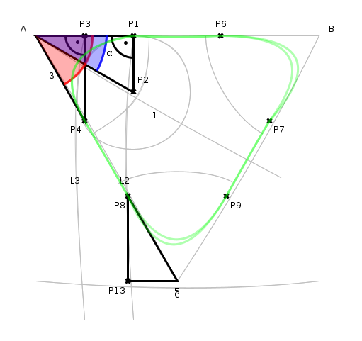

Konstruktive Geometrie mit dem Computer

Ich habe in einem vorhergehenden Artikel beschrieben, dass ich eine weitere neue Graphik-Primitive erstellt habe. Dabei musste ich mir meine verschütteten Trigonometrie-Kenntnisse wieder vor Augen führen - mit Bleistift und Papier. Das müsste doch auch anders gehen dachte ich mir und begann...
Es gibt für so etwas natürlich schon hervorragende Lösungen - ein Beispiel dafür ist GCLC - ich wollte versuchen, etwas ähnliches zu schaffen.
Mein Ansatz war, einige Methoden zur Konstruktion grundlegender geometrischer Konzepte wie Mittelsenkrechter, Winkelhalbierender,... zu schreiben, die dann mit dedizierten Methoden, die auf java.awt.Graphics2D arbeiten sollten kombiniert werden können.
Nachdem ein grundlegender Satz solcher Methoden verfügbar war, habe ich meinen Java-Editor benutzt um eine Variante eines Geometrieeditors zu schaffen, der auf jede Änderung an der Textbeschreibung hin die entsprechende Graphik neu zeichnet. Die Editorkomponente kann in ein separates Fenster ausgekoppelt werden - damit kann man unkompliziert mit zwei Bildschirmen arbeiten, wobei auf einem der Editor und auf dem zweiten das Vorschaubild zu sehen ist.
Fehler im Editor werden farblich hervorgehoben. Fehler sorgen nicht dafür, dass die Vorschau unbrauchbar wird - es werden alle Zeichenanweisungen bis direkt vor dem ersten Fehler ausgeführt. So bekommt man zusätzlich zu der farblichen Markierung des Fehlers im Text auch durch die Vorschau eine Ahnung dafür, wo der Fehler versteckt ist.
Die Anwendung kann die Zeichnung in verschiedenen Formaten - darunter PDF, SVG und PNG - exportieren. Natürlich funktioniert diese Methode auch nahtlos mit meiner Implementierung von Hatching oder sloppy Rendering.
Mit dem aktuellen Stand wurde zum Beispiel folgende Datei erstellt:

Eine BeispielkonstruktionDer dafür nötige Text ist nachfolgend angegeben:
import java.awt.geom.AffineTransform;
import java.awt.geom.GeneralPath;
import java.awt.geom.Line2D;
import java.awt.geom.Point2D;
import de.elbosso.ui.awt.RoughGraphics;
import java.awt.*;
double len=400;
double r=80;
double angle=60;
double halfangle=angle*0.5;
java.awt.geom.Point2D a=new Point2D.Double(0,0);
java.awt.geom.Point2D b=new Point2D.Double(1,0);
java.awt.geom.Point2D c=de.elbosso.algorithms.math2d.geometry.Utilities.unitVectorFromDirection(java.lang.Math.toRadians(angle));
java.awt.geom.Point2D d=de.elbosso.algorithms.math2d.geometry.Utilities.unitVectorFromDirection(java.lang.Math.toRadians(halfangle));
java.awt.geom.Point2D bs=de.elbosso.algorithms.math2d.geometry.Utilities.scale(b,len);
java.awt.geom.Point2D cs=de.elbosso.algorithms.math2d.geometry.Utilities.scale(c,len);
java.awt.geom.Point2D ds=de.elbosso.algorithms.math2d.geometry.Utilities.scale(d,len);
java.awt.geom.Line2D l1=new Line2D.Double(a,ds);
double ak=r/java.lang.Math.tan(java.lang.Math.toRadians(halfangle));
double gk2=ak*java.lang.Math.sin(java.lang.Math.toRadians(angle));
double ak2=ak*java.lang.Math.cos(java.lang.Math.toRadians(angle));
double gk3=ak*java.lang.Math.sin(java.lang.Math.toRadians(halfangle));
double ak3=ak*java.lang.Math.cos(java.lang.Math.toRadians(halfangle));
java.awt.geom.Point2D pak=new Point2D.Double(ak,0);
java.awt.geom.Point2D cp=new Point2D.Double(ak,len);
java.awt.geom.Line2D l2=new Line2D.Double(pak,cp);
java.awt.geom.Point2D center=de.elbosso.algorithms.math2d.geometry.Utilities.intersection(l1,l2);
java.awt.geom.Point2D p3=new Point2D.Double(gk3,0);
java.awt.geom.Point2D p4=new Point2D.Double(gk3,ak3);
java.awt.geom.Point2D p3prime=new Point2D.Double(a.getX(),p4.getY());
java.awt.geom.Point2D p5=new Point2D.Double(gk3,len);
java.awt.geom.Line2D l3=new Line2D.Double(p3,p5);
java.awt.geom.Point2D p6=new Point2D.Double(bs.getX()-pak.getX(),0);
java.awt.geom.Point2D p7=new Point2D.Double(bs.getX()-p4.getX(),p4.getY());
java.awt.geom.Point2D p8=new Point2D.Double(len/2-ak2,cs.getY()-gk2);
java.awt.geom.Point2D p9=new Point2D.Double(len/2+ak2,cs.getY()-gk2);
java.awt.geom.Point2D p10=new Point2D.Double(a.getX(),len);
java.awt.geom.Point2D p11=new Point2D.Double(a.getX(),cs.getY());
java.awt.geom.Point2D p12=new Point2D.Double(bs.getX(),cs.getY());
java.awt.geom.Line2D l4=new Line2D.Double(a,p10);
java.awt.geom.Line2D l5=new Line2D.Double(p11,p12);
java.awt.geom.Point2D p13=new Point2D.Double(p8.getX(),cs.getY());
java.awt.Graphics2D g2=new de.elbosso.algorithms.math2d.geometry.Graphics2D((java.awt.Graphics2D)g);
RoughGraphics rg=new RoughGraphics(g2,shapeCache);
rg.setSloppyness(3);
rg.setPreserveVertices(true);
g2.setRenderingHint(RenderingHints.KEY_ANTIALIASING,RenderingHints.VALUE_ANTIALIAS_ON);
g2.setBackground(Color.WHITE);
g2.setStroke(new BasicStroke(3.0f));
g2.setPaint(Color.WHITE);
//g2.fillRect(0,0,getSize().width,getSize().height);
java.awt.geom.AffineTransform at=g2.getTransform();
at.concatenate(AffineTransform.getTranslateInstance(50,50));
g2.setTransform(at);
g2.setPaint(Color.BLACK);
g2.setPaint(Color.LIGHT_GRAY);
g2.setStroke(new BasicStroke(1.0f));
de.elbosso.ui.awt.GfxUtilities.drawTriangleMarkAngles(a,cs,bs,rg);
de.elbosso.ui.awt.GfxUtilities.drawLine(l1,rg);
de.elbosso.ui.awt.GfxUtilities.drawLine(l2,rg);
de.elbosso.ui.awt.GfxUtilities.drawLine(l3,rg);
de.elbosso.ui.awt.GfxUtilities.drawLine(l5,rg);
de.elbosso.ui.awt.GfxUtilities.drawOval(new java.awt.geom.Ellipse2D.Double(center.getX()-r,center.getY()-r,r*2,r*2),rg);
g2.setStroke(new BasicStroke(3.0f));
g2.setPaint(Color.BLACK);
de.elbosso.ui.awt.GfxUtilities.drawTriangleVertices(new java.awt.geom.Point2D[]{a,bs,cs},new java.lang.String[]{"A","B","C"},rg);
de.elbosso.ui.awt.GfxUtilities.labelLine(l1,"L1",rg);
de.elbosso.ui.awt.GfxUtilities.labelLine(l2,"L2",rg);
de.elbosso.ui.awt.GfxUtilities.labelLine(l3,"L3",rg);
de.elbosso.ui.awt.GfxUtilities.labelLine(l5,"L5",rg);
de.elbosso.ui.awt.GfxUtilities.drawPoint(pak,g2,"P1", SwingConstants.NORTH);
de.elbosso.ui.awt.GfxUtilities.drawPoint(center,g2,"P2", SwingConstants.NORTH_EAST);
de.elbosso.ui.awt.GfxUtilities.drawPoint(p3,g2,"P3", SwingConstants.NORTH);
de.elbosso.ui.awt.GfxUtilities.drawPoint(p4,g2,"P4", SwingConstants.SOUTH_WEST);
de.elbosso.ui.awt.GfxUtilities.drawPoint(p6,g2,"P6", SwingConstants.NORTH);
de.elbosso.ui.awt.GfxUtilities.drawPoint(p7,g2,"P7", SwingConstants.SOUTH_EAST);
de.elbosso.ui.awt.GfxUtilities.drawPoint(p8,g2,"P8", SwingConstants.SOUTH_WEST);
de.elbosso.ui.awt.GfxUtilities.drawPoint(p9,g2,"P9", SwingConstants.SOUTH_EAST);
de.elbosso.ui.awt.GfxUtilities.drawPoint(p13,g2,"P13", SwingConstants.SOUTH_WEST);
java.awt.geom.Point2D al=de.elbosso.algorithms.math2d.geometry.Utilities.unitVectorFromDirection(java.lang.Math.toRadians(halfangle*0.5));
g2.drawString("\u03B1",(int)(al.getX()*100+2*de.elbosso.algorithms.math2d.geometry.Utilities.POINT_DIMENSION),(int)(al.getY()*100+2*de.elbosso.algorithms.math2d.geometry.Utilities.POINT_DIMENSION));
java.awt.geom.Point2D bl=de.elbosso.algorithms.math2d.geometry.Utilities.unitVectorFromDirection(java.lang.Math.toRadians(angle*1.25));
g2.drawString("\u03B2",(int)(bl.getX()*60+2*de.elbosso.algorithms.math2d.geometry.Utilities.POINT_DIMENSION),(int)(bl.getY()*60+2*de.elbosso.algorithms.math2d.geometry.Utilities.POINT_DIMENSION));
//java.awt.geom.Point2D e=intersection(new Line2D.Double(a,ds),new Line2D.Double(bs,cs));
//System.out.println(e);
//de.elbosso.algorithms.math2d.geometry.Utilities.drawPoint(e,g2,"E", SwingConstants.NORTH);
de.elbosso.ui.awt.GfxUtilities.drawTriangleMarkOnlyRightAngles(a,pak,center,g2);
de.elbosso.ui.awt.GfxUtilities.drawTriangleMarkOnlyRightAngles(a,p3,p4,g2);
de.elbosso.ui.awt.GfxUtilities.drawTriangle(p8,cs,p13,g2,false,false);
g2.setPaint(new java.awt.Color(255,0,0,80));
rg.fillArc(-80,-80,160,160,0,-(int)java.lang.Math.toDegrees(de.elbosso.algorithms.math2d.geometry.Utilities.angleOfVector(cs)));
g2.setPaint(new java.awt.Color(255,0,0,160));
rg.drawArc(-80,-80,160,160,0,-(int)java.lang.Math.toDegrees(de.elbosso.algorithms.math2d.geometry.Utilities.angleOfVector(cs)));
g2.setPaint(new java.awt.Color(0,0,255,80));
rg.fillArc(-100,-100, 200,200,0,-(int)java.lang.Math.toDegrees(de.elbosso.algorithms.math2d.geometry.Utilities.angleOfVector(ds)));
g2.setPaint(new java.awt.Color(0,0,255,160));
rg.drawArc(-100,-100, 200,200,0,-(int)java.lang.Math.toDegrees(de.elbosso.algorithms.math2d.geometry.Utilities.angleOfVector(ds)));
g2.setPaint(new java.awt.Color(0,255,0,80));
java.awt.geom.GeneralPath path=new java.awt.geom.GeneralPath();
path.moveTo(pak.getX(),pak.getY());
path.lineTo(p6.getX(),p6.getY());
path.quadTo(bs.getX(),bs.getY(),p7.getX(),p7.getY());
path.lineTo(p9.getX(),p9.getY());
path.quadTo(cs.getX(),cs.getY(),p8.getX(),p8.getY());
path.lineTo(p4.getX(),p4.getY());
path.quadTo(a.getX(),a.getY(),pak.getX(),pak.getY());
path.closePath();
rg.draw(path);


Vor 5 Jahren hier im Blog
-
DIY EBook-Reader
01.06.2019
Ein Kollege von mir begann mich bereits vor ein paar Wochen auszufragen, was mein nächstes Urlaubsprojekt wäre. Bisher musste ich ihm sagen, dass ich noch keine Pläne hatte. Das hat sich jetzt geändert:
Weiterlesen...
Tags
Android Basteln C und C++ Chaos Datenbanken Docker dWb+ ESP Wifi Garten Geo Git(lab|hub) Go GUI Gui Hardware Java Jupyter Komponenten Links Linux Markdown Markup Music Numerik PKI-X.509-CA Python QBrowser Rants Raspi Revisited Security Software-Test sQLshell TeleGrafana Verschiedenes Video Virtualisierung Windows Upcoming...
Neueste Artikel
- sQLshell Version 7.7pre4 build 10491
Eine neue Version der sQLshell ist verfügbar!
Weiterlesen... - LinkCollections 2024 IV
Nach der letzten losen Zusammenstellung (für mich) interessanter Links aus den Tiefen des Internet von 2024 folgt hier gleich die nächste:
Weiterlesen... - sQLshell, SQLite und Redis - oh my!
Ich habe in letzter Zeit hin und wieder mit der sQLshell und SQLite herumgespielt - Neulich wurde ich gefragt, ob die sQLshell eigentlich auch Redis kann...
Weiterlesen...
Manche nennen es Blog, manche Web-Seite - ich schreibe hier hin und wieder über meine Erlebnisse, Rückschläge und Erleuchtungen bei meinen Hobbies.
Wer daran teilhaben und eventuell sogar davon profitieren möchte, muß damit leben, daß ich hin und wieder kleine Ausflüge in Bereiche mache, die nichts mit IT, Administration oder Softwareentwicklung zu tun haben.
Ich wünsche allen Lesern viel Spaß und hin und wieder einen kleinen AHA!-Effekt...
PS: Meine öffentlichen GitHub-Repositories findet man hier - meine öffentlichen GitLab-Repositories finden sich dagegen hier.